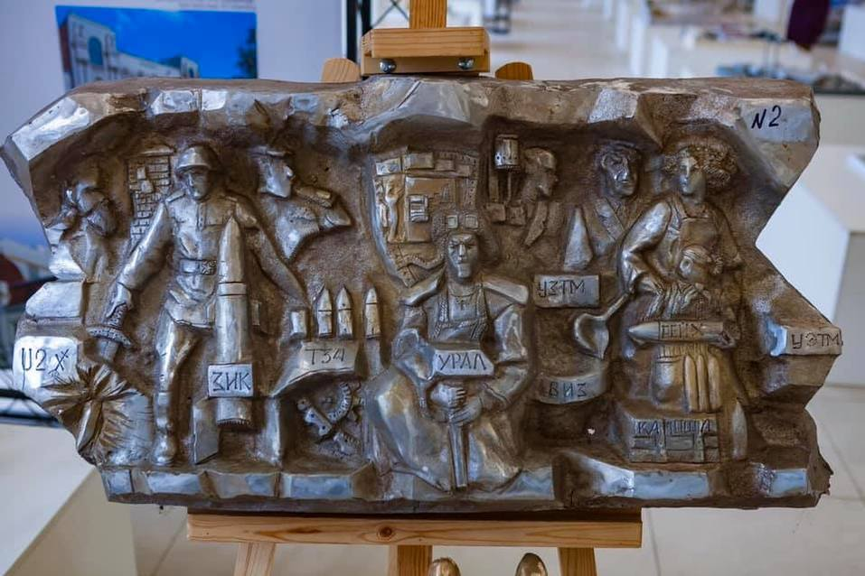

На итоговом заседании в Музее архитектуры и дизайна выбран победитель конкурса на изготовление горельефа в Историческом сквере Екатеринбурга — Константин Грюнберг (его работа на картинке). Сразу разгорелись споры по этому поводу и шквал критики в отношении художественности, эстетики и заложенного смысла обрушился на автора и лиц, принявших такое решение. Чтобы не пускаться в пустое критиканство давайте попробуем разобраться.
Самый разумный путь — это провести экспресс-анализ работы с помощью нескольких методов оценки произведений искусства. Я предлагаю воспользоваться базовыми положениями теории вкуса, иконологическим методом и герменевтическим анализом.
Для начала давайте обратимся к теории восприятия искусства, для того, чтобы оттолкнуться от этой базовой вещи в наших последующих оценках. Произведение искусства — это как бы музыкальная партитура, предназначенная для различных «исполнений». Каждый зритель осуществляет такое исполнение уникальным способом, опираясь на замысел автора, форму произведения, культурный контекст и собственный багаж знаний. Замысел автора, при этом, в искусстве не передается напрямую, непосредственно, а реконструируется зрителем, путем построения ассоциативных цепочек. Эта духовная работа зрителя, необходимая герменевтическая задача — является отличительной чертой именно искусства. Попросту говоря, если такая работа не «провоцируется», то нет и искусства.
С точки зрения теории вкуса, есть две противоположные позиции к оценке феномена культуры. Не вдаваясь в споры, можем воспользоваться обеими
. Первая утверждает, что чем проще ассоциативный посыл, тем хуже и примитивнее произведение искусства и тем меньший уровень вкуса нужен для его восприятия. Климент Гринберг (один из самых известных художественных критиков 20 века), так вообще отказывал произведениям с прямым посылом в принадлежности к искусству. Как пример: Гитлер со зверской рожей, отрывающий голову еврейскому мальчику — очень плохой вариант для создания образа фашизма и его преступлений.
Вторая же позиция говорит, что самым важным в искусстве является высочайший уровень мастерства, провоцирующий очень глубокие эстетические переживания. И в таком качестве, даже одноуровневый смысл может быть оправдан «силой формы». Если посмотреть на картинку анализируемого произведения, то… ну в общем вы сами видите, никакой критики, как с первой точки зрения, так и со второй, она не выдерживает. Есть правда один художественный ход, который в такой ситуации теоретически может спасти работу, это создание новой формы, что в искусстве (нравится нам это или нет) само по себе ценно. Но. Новой формы здесь тоже нет.
Иконологический метод Эрвина Панофски (один из самых авторитетных в искусствознании) предполагает рассмотрение произведения в три этапа: 1) первичный анализ, то есть простое чувственное восприятие; то, что мы все можем увидеть непосредственно в линиях, объемах и цветах, по сути — это формальный анализ; 2) иконографический анализ, то есть анализ смыслов — историко-литературных, сюжетных, аллегорических; 3) иконологическая интерпретация, которая является результатом своего рода синтетической культурной интуиции.


Давайте посмотрим, что же мы видим непосредственно глазами? Три основных фигуры — солдат, рабочий и женщина с ребенком, разнообразное оружие, выцарапанные надписи на переднем плане и элементы гербовой символики на заднем. Из за того, что здесь нет выраженного композиционного центра, нет устойчивого линейного динамического вектора, нет видимой или подразумеваемой декоративно-орнаментальной символической структуры — создается ощущение некоего визуально хаоса. Это не позволяет «зацепиться взгляду» и «войти в картину».
Тем самым, автоматически внимание зрителя смещается на текстовые плашки, надписи, которые становятся основным элементом первичного восприятия. Если отвлечься от смысла, то такой вариант вполне возможен, но только в том случае, если формально они (надписи) были бы организованы в структуру, предопределяющую композицию, ну или на крайний случай, создающую текстографический код-образ… чего лично я не вижу, ни того, ни другого.
Второй этап… Поскольку сейчас у нас экспресс-анализ, без глубокого погружения, и я уже, если честно, устал текст вбивать
, то ограничусь некоторыми тезисами. Основной сюжетный посыл воспринимается так: Екатеринбург — город, который делает оружие и все его жители, от мала до велика должны быть внутренне мобилизованы (кстати, причем тут хорошая западная группа Ю Ту, я не очень понимаю
). Если посмотреть на сегодняшний Екатеринбург, то такая идея выглядит странно. Сегодня мы — масштабный научный, культурный, деловой и производственный центр. И даже, если посмотреть ретроспективно на историю и опереться на расхожую устойчивую фразу «Урал — опорный край державы», то и в этом случае главной идеей будет являться «дух технологического прогресса» и особые качества жителей города, воспринимающих жизнь не как развлечение или путь безоглядного сохранения традиций, а как поиск «каменного цветка».
С семиотико-герменевтической точки зрения качественное произведение искусства (особенно монументального городского характера) должно содержать в себе как минимум три слоя смыслообразования. Первый слой виден и понятен всем, он задает тему и общий настрой. Второй слой нацелен на носителей городского культурного кода и через «формулы пафоса» соответствующей культурной матрицы раскрывает значимые для жителей города мотивы. Мотивы, которые позволяют ощутить свою ценность в рамках общей национальной культуры и донести ее в коммуникации собратьям из других регионов. Третий слой раскрывается пытливому образованному заинтересованному зрителю, создавая ощущение причастности к идее и тонким смыслам исторического и культурного контекста, в котором он (зритель) оказался в процессе взаимодействия с произведением. Насколько всё это реализовано в анализируемой работе — нуу… судите сами
В завершение, я бы хотел сказать, что «наезды» на автора со словами «ему должно быть стыдно», кажутся мне неуместными. С чего бы? Он — автор и имеет право на свое видение. Другое дело, что мы, вовсе не обязаны с этим видением (и его качеством) соглашаться.
За сим предлагаю поставить точку, потому как особого разнообразия мнений по поводу рассматриваемого произведения тут просто появиться не может… не из чего.